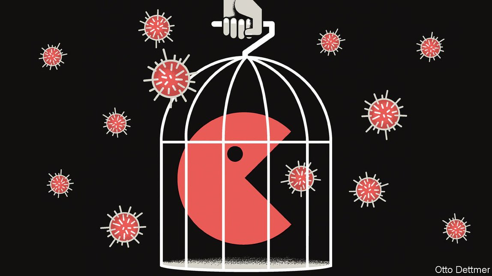

2021-05-05T13:43:02+00:00
自由交流
在一场大流行病中如何看待疫苗和专利
面对公共卫生危机，是否应该打破规则？
走运的话，到今年年底全球将有充足的新冠疫苗供应。但目前还不够，而在已经生产出来的约十亿剂疫苗中，绝大多数都用在了较富裕国家。形成鲜明对比的是，死亡病例越来越集中于较贫穷的国家，例如印度，该国每百人只有9人接种了疫苗，而美国每百人有64人接种。一些政府正在提出激进的方案以弥合这种差距。例如，印度和南非建议世贸组织成员国放弃对抗疫技术的知识产权保护，包括疫苗。富裕国家的一些人开始接受这个建议。在美国，十名民主党参议员最近敦促总统拜登对此给予支持。但制药企业警告说，这将严重打击创新。尽管知识产权保护并没有对眼下的疫苗生产造成很大的限制，但新冠疫情的经验表明，早就应该重新讨论在面对突发卫生事件时的知识产权问题了。
知识产权保护的经济效益论证似乎足够有说服力。创新的成本高，风险大。制药公司在药物研发方面投入大量资金，但无法保证成功。如果其他公司可以随意仿制新发现的药物，其价格将迅速下降到边际生产成本的水平，让创新者无法收回研发成本。为了使前期投资在经济上是值得的，需要让创新公司在短期内垄断生产。专利提供了这种保护。
但是，知识产权保护并不总能发挥这种作用。圣路易斯华盛顿大学（Washington University in St Louis）的米歇尔·博尔德林（Michele Boldrin）和戴维·莱文（David Levine）表示，各种研究一再表明，没有多少证据或完全没有证据显示加强知识产权保护促进了后续创新，就算是在知识产权通常被假定为立身之本的制药业也不例外。他们估计，即使私人投资仅占到美国生物医学研究支出的三分之一左右，专利也为公司带来了丰厚的利润。其他创新回报——例如财务奖励——可能会以更低的成本催生出更多突破性药物。不过在目前，对于大多数研发新冠疫苗的公司而言，知识产权保护对它们的业务至关重要。
那么在一场每天仍在夺走过万条性命的大流行病期间，是否应该放弃一些知识产权保护呢？主张这么做的人认为，疫情显然是极端事件，有理由豁免知识产权。之所以能有这么多不同的新冠疫苗得以迅速研发和生产出来，有赖于私人投资对相关技术的长期投入，以及疫情开始后生物科技公司的专家们紧急行动。但是，这些努力之所以成为可能，离不开巨大的公共资源投入。从支持基础研究到提供大量政府资金，这部分投入发挥了不可忽视的作用。而且豁免知识产权也不会危及制药公司的生存。即使不把辉瑞2021年与疫苗相关的40亿美元预期利润计算在内，它仍将实现高额利润。
但是，业界利益方指出豁免疫苗知识产权并不会释放出大量新产能的说法有其道理。全球大部分疫苗产能都已经投入生产，在一些情况下是因为研发方与其他生产商签署了许可协议。例如，阿斯利康（AstraZeneca）就与全球最大的疫苗生产商印度血清研究所（Serum Institute of India）达成了这样的协议。比起知识产权法规，其他约束条件对产能的限制更大，包括原材料供应不足、安全生产疫苗所需的专业技术不足等。其中一些约束正是政府自己造成的——出口限制干扰了供应链。
此外，扩大产能最大的障碍不是知识产权保护，而是专有资源和其他专门知识，它们并不在专利保护范围内。许多较贫穷的国家在利用辉瑞和莫德纳（Moderna）所采用的mRNA技术方面没有专利障碍，真正的障碍是对新技术不熟悉。同样，有潜力生产腺病毒载体疫苗（比如阿斯利康开发的疫苗）的机构缺乏专为生产这种疫苗而开发的细胞系。
显然是坏主意
这样的现状说明制药公司和政府在疫苗事务上都存在不足。制药公司一直不愿与有朝一日可能构成竞争威胁的生产商分享细胞系、数据和隐性专业知识，拖慢了形成新产能、挽救生命的步伐。在有些情况下，贸易规则允许政府授予强制许可，也就是支付一定费用，在未经发明人同意的情况下使用其专利发明。但是，如果研发方不同时分享生产疫苗所需的其他信息和资源，这样的许可就毫无用处。比如，世卫组织提出了一个辅助这种信息和资源共享的倡议，但制药业基本没有理会。
不过，过去一年的经验也显示出政府在以后谈判合同（比如抗击新变种病毒的疫苗的合同）时可以改进的地方。政府在研发上投入了巨资，却没有在合同中包含一些条款来迫使制药公司向其他公司分享要快速生产大量疫苗所需的信息。它们也没有试图敦促企业转让扩大生产所需的技术。同时，政府可以更多地反思技术转让和知识产权共享的基本规则，为应对下一次大流行病做好准备。代价高昂的错误已经犯下，付出的是一条条生命。但我们可以避免重蹈覆辙。
2021-05-05T13:43:02+00:00
Free exchange
How to think about vaccines and patents in a pandemic
Do public-health crises call for a departure from the rules?
WITH ANY luck, the world will be awash in covid-19 vaccines by the end of the year. For now, though, it is not, and of the billion or so doses that have been produced the vast majority have been administered in richer countries. Deaths, by contrast, are increasingly concentrated in poorer ones, like India, where only about nine in every 100 people have been jabbed, compared with 64 in America. Some governments are floating radical options to remedy the mismatch. India and South Africa, for instance, propose that members of the World Trade Organisation waive intellectual-property (IP) protections for covid-fighting technologies, including vaccines. Some in the rich world are warming to the idea; in America, ten Democratic senators recently urged President Joe Biden to back it. Drugmakers, however, warn that it would deal a crippling blow to innovation. Even though IP protections are not a big constraint on vaccine production today, the experience of covid-19 suggests that a re-examination of IP rights in the context of health emergencies is overdue.
The economic argument for IP protections seems compelling enough. Innovation is costly and risky. Pharmaceutical companies invest heavily in drug development with no guarantee of success. If other firms could freely copy a newly discovered treatment, then its price would quickly fall to the marginal cost of production, leaving the innovator unable to cover the costs of development. A short-term monopoly on production granted to innovating firms is needed to make the upfront investments economically worthwhile. Patents provide this protection.
IP protections do not always work in quite this way, however. Studies routinely find little or no evidence that strengthening them boosts subsequent innovation, argue Michele Boldrin and David Levine of Washington University in St Louis; pharmaceuticals, where IP rights are often assumed to be essential, are no exception. Patents award rich profits to firms even though private investment accounts for only about a third of spending on American biomedical research, they estimate. Other rewards to innovation, such as financial prizes, could yield more breakthrough drugs at lower cost. Yet for now, IP protections are crucial to the businesses of most of the firms developing covid-19 vaccines.
Should some of these be waived in a pandemic that continues to claim more than 10,000 lives a day? Advocates argue that the pandemic is clearly an extreme event that warrants an exemption from IP laws. The rapid creation and production of so many covid-19 vaccines is a testament to the long years of private investment in the associated technologies and the urgency with which experts at biotech firms moved when the pandemic began. But there is no ignoring the vast public resources that made these efforts possible, from support for basic research to piles of government cash. Nor would a waiver endanger pharma firms’ viability. Pfizer would still be highly profitable even if you excluded its expected vaccine-related profits of $4bn in 2021.
Yet industry interests are right to say that liberating vaccine IP would not unleash a flood of new production. Most of the world’s vaccine-making capacity is already in use, in some cases because developers signed licensing agreements with other manufacturers. AstraZeneca, for instance, struck just such a deal with the Serum Institute of India, the world’s largest vaccine-maker. Other constraints on production have bound more tightly than IP rules, including the limited availability of raw materials and expertise needed to safely produce doses. Some of those have been imposed by governments themselves, through export restrictions that interfere with supply chains.
Moreover, the biggest obstacle to expanding capacity is not IP protections, but proprietary resources and other know-how, which are not shielded by patents. Many poorer countries face no patent barriers to using the mRNA technologies employed by Pfizer and Moderna; the obstacle is instead a lack of familiarity with new techniques. Similarly, would-be producers of adenovirus-type vaccines, such as that developed by AstraZeneca, lack access to the specially developed cell lines needed to create them.
A patently bad idea
This state of affairs illustrates deficiencies in how both drugmakers and governments have handled the vaccine effort. Firms have been reluctant to share cell lines, data and tacit know-how with producers that could one day pose a competitive threat, slowing the creation of new, and life-saving, production capacity. In some cases trade rules permit governments to grant compulsory licences—the right to use a patented invention without the inventor’s consent, for a price. But such licences are of no use if developers do not also share the other information and resources needed to produce doses. An initiative to aid such sharing set up by the World Health Organisation, for instance, has been all but ignored by the industry.
Yet the experience of the past year also suggests how governments might do better when they next negotiate contracts, say for vaccines to counter new variants. Having invested so much in development, they neglected to include measures in contracts to compel drugmakers to share the information other manufacturers need to quickly produce vast amounts of vaccines. Nor have they sought to press firms to transfer the technology needed to expand manufacturing. In the meantime, governments could do more to rethink the ground rules for technology transfer and the sharing of intellectual property, so as to be prepared for the next pandemic. Costly errors were made, their toll measured in lives. But they need not be repeated. ■
2021-05-05T13:43:02+00:00
自由交流
在一場大流行病中如何看待疫苗和專利
面對公共衛生危機，是否應該打破規則？
走運的話，到今年年底全球將有充足的新冠疫苗供應。但目前還不夠，而在已經生產出來的約十億劑疫苗中，絕大多數都用在了較富裕國家。形成鮮明對比的是，死亡病例越來越集中於較貧窮的國家，例如印度，該國每百人只有9人接種了疫苗，而美國每百人有64人接種。一些政府正在提出激進的方案以彌合這種差距。例如，印度和南非建議世貿組織成員國放棄對抗疫技術的知識產權保護，包括疫苗。富裕國家的一些人開始接受這個建議。在美國，十名民主党參議員最近敦促總統拜登對此給予支持。但製藥企業警告說，這將嚴重打擊創新。儘管知識產權保護並沒有對眼下的疫苗生產造成很大的限制，但新冠疫情的經驗表明，早就應該重新討論在面對突發衛生事件時的知識產權問題了。
知識產權保護的經濟效益論證似乎足夠有說服力。創新的成本高，風險大。製藥公司在藥物研發方面投入大量資金，但無法保證成功。如果其他公司可以隨意仿製新發現的藥物，其價格將迅速下降到邊際生產成本的水平，讓創新者無法收回研發成本。為了使前期投資在經濟上是值得的，需要讓創新公司在短期內壟斷生產。專利提供了這種保護。
但是，知識產權保護並不總能發揮這種作用。聖路易斯華盛頓大學（Washington University in St Louis）的米歇爾·博爾德林（Michele Boldrin）和戴維·萊文（David Levine）表示，各種研究一再表明，沒有多少證據或完全沒有證據顯示加強知識產權保護促進了後續創新，就算是在知識產權通常被假定為立身之本的製藥業也不例外。他們估計，即使私人投資僅佔到美國生物醫學研究支出的三分之一左右，專利也為公司帶來了豐厚的利潤。其他創新回報——例如財務獎勵——可能會以更低的成本催生出更多突破性藥物。不過在目前，對於大多數研發新冠疫苗的公司而言，知識產權保護對它們的業務至關重要。
那麼在一場每天仍在奪走過萬條性命的大流行病期間，是否應該放棄一些知識產權保護呢？主張這麼做的人認為，疫情顯然是極端事件，有理由豁免知識產權。之所以能有這麼多不同的新冠疫苗得以迅速研發和生產出來，有賴於私人投資對相關技術的長期投入，以及疫情開始後生物科技公司的專家們緊急行動。但是，這些努力之所以成為可能，離不開巨大的公共資源投入。從支持基礎研究到提供大量政府資金，這部分投入發揮了不可忽視的作用。而且豁免知識產權也不會危及製藥公司的生存。即使不把輝瑞2021年與疫苗相關的40億美元預期利潤計算在內，它仍將實現高額利潤。
但是，業界利益方指出豁免疫苗知識產權並不會釋放出大量新產能的說法有其道理。全球大部分疫苗產能都已經投入生產，在一些情況下是因為研發方與其他生產商簽署了許可協議。例如，阿斯利康（AstraZeneca）就與全球最大的疫苗生產商印度血清研究所（Serum Institute of India）達成了這樣的協議。比起知識產權法規，其他約束條件對產能的限制更大，包括原材料供應不足、安全生產疫苗所需的專業技術不足等。其中一些約束正是政府自己造成的——出口限制干擾了供應鏈。
此外，擴大產能最大的障礙不是知識產權保護，而是專有資源和其他專門知識，它們並不在專利保護範圍內。許多較貧窮的國家在利用輝瑞和莫德納（Moderna）所採用的mRNA技術方面沒有專利障礙，真正的障礙是對新技術不熟悉。同樣，有潛力生產腺病毒載體疫苗（比如阿斯利康開發的疫苗）的機構缺乏專為生產這種疫苗而開發的細胞系。
顯然是壞主意
這樣的現狀說明製藥公司和政府在疫苗事務上都存在不足。製藥公司一直不願與有朝一日可能構成競爭威脅的生產商分享細胞系、數據和隱性專業知識，拖慢了形成新產能、挽救生命的步伐。在有些情況下，貿易規則允許政府授予強制許可，也就是支付一定費用，在未經發明人同意的情況下使用其專利發明。但是，如果研發方不同時分享生產疫苗所需的其他信息和資源，這樣的許可就毫無用處。比如，世衛組織提出了一個輔助這種信息和資源共享的倡議，但製藥業基本沒有理會。
不過，過去一年的經驗也顯示出政府在以後談判合同（比如抗擊新變種病毒的疫苗的合同）時可以改進的地方。政府在研發上投入了巨資，卻沒有在合同中包含一些條款來迫使製藥公司向其他公司分享要快速生產大量疫苗所需的信息。它們也沒有試圖敦促企業轉讓擴大生產所需的技術。同時，政府可以更多地反思技術轉讓和知識產權共享的基本規則，為應對下一次大流行病做好準備。代價高昂的錯誤已經犯下，付出的是一條條生命。但我們可以避免重蹈覆轍。